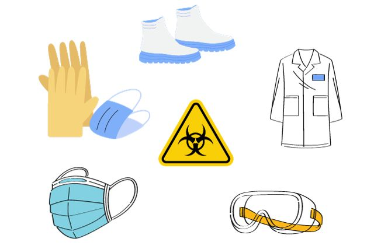
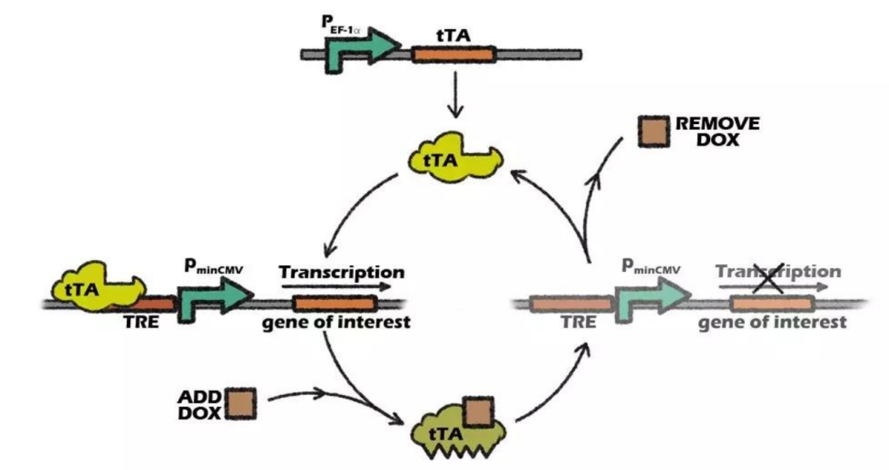
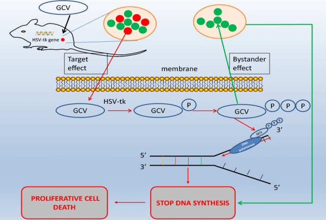
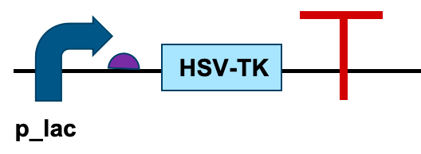

Loading...

Biosafety
Overview
During our progress in the project, safety is our inevitable companion along the project milestones. Following iGEM Responsibility guidelines, it is an important objective to prevent harm to ourselves, colleagues, and the environment. It was crucial to predict and prevent potential accidents during our lab experiments. So, we anticipated as many risks as we could and provided solutions for them. Moreover, it is of utmost importance to adhere to lab safety standards and follow the regulations and laws during our experiments in the lab. We have put in consideration not only the lab safety but also our design safety in the form of TET-off system and suicide module.
Key Principles
Personal Protective Equipment (PPE) Compliance:
All team members must wear appropriate PPE, such as lab coats, gloves, goggles, and masks, to safeguard against direct exposure to biological, chemical, and physical hazards during laboratory work. Ensure PPE is in good condition and used correctly at all times.
Comprehensive Risk Assessment:
Conduct a thorough risk assessment at the early stage of the project, both for laboratory operations and experimental designs. Evaluate potential risks from biological agents, chemicals, equipment usage, and genetic manipulations, and develop corresponding mitigation strategies to minimize these risks.
Biosecurity Assurance:
Select safe biological chassis and vector systems. When working with genetically engineered organisms, take measures to prevent unintended gene transfer and ensure the organisms pose no threat to human health and the environment. Adhere to strict biosafety protocols for handling, storing, and disposing of biological materials.
Equipment and Facility Maintenance:
Regularly inspect, maintain, and calibrate laboratory equipment to ensure proper functioning. Provide appropriate facilities like biosafety cabinets, fume hoods, and emergency safety equipment. Ensure that all equipment and facilities meet safety standards and are used in accordance with the correct procedures.
Controllability and Monitoring in Experimental Design:
Design experiments with good controllability over experimental conditions. Incorporate monitoring and feedback mechanisms to detect any abnormalities promptly. This includes precise control of environmental factors in cell cultures or bioreactors and real-time monitoring of key parameters to ensure the stability and reproducibility of experimental results.
Laboratory Safety
General Regulation
Our Lab 413
Our laboratory is classified as BSL-1. It is also organized to provide safety with high practicality and effectiveness.
Our lab safety features include:
1. Flame retardant and waterproof workbench, which can withstand moderate heat, organic solvents, acids and alkalis, disinfectants and other chemicals.
2. Water pipes are equipped with backflow preventers.
3. Biological safety cabinet.
4. Necessary safety precautions, such as safety goggles and protective gloves, etc.
5. Autoclave sterilizers and other sterilization equipment.
6. Showers and eyewashes.
7. Emergency equipment, such as fire-fighting equipment, first aid equipment.
8. Emergency lighting installations.
9. Entry and exit registration.

Chemicals Management
Personal Principles

Researcher Training
Dressing: In a laboratory setting, the lab coat should be long enough to reach the knees, and the sleeves should cover the wrists to protect the skin and personal clothing from direct contact with hazardous substances. It is essential to wear a standard long-sleeved lab coat, long trousers, gloves, and a mask. Ensure that your hair is properly tied up or covered. Wearing any jewelry that may affect the safety of the experiment is strictly prohibited. The shoes should completely cover the feet, and high heels or slippers are not allowed.
Cleanliness: Hands must be washed after removing gloves and before leaving the laboratory. If there is visible contamination on the hands while removing personal protective equipment (PPE), wash your hands before proceeding to remove other PPE items. You can wash your hands with soap and water or disinfect them with alcohol. In addition to regular cleaning and disinfection measures, the performance of clean benches should be regularly tested and evaluated.
Equipment Usage: Before using the equipment, carefully check whether all conditions meet the requirements and whether there are any abnormalities. During the use of the equipment, pay attention to observe whether all states of the instrument are normal. If adjustments are needed, make them in a timely manner to keep the instrument working in the best state. After use, complete the finishing, cleaning, or purging work as required and turn off the equipment. The use of all equipment must be registered, and the operating procedures must be strictly followed. Before the experiment, inspect the equipment to ensure that it is in good working condition and prevent equipment malfunctions.
Reagent Usage: In order to obtain accurate experimental results, the following rules should be followed when handling reagents to ensure that the reagents are not contaminated and do not deteriorate: Do not touch the reagents with bare hands. Use clean spatulas, graduated cylinders, or droppers to handle reagents. It is strictly prohibited to use the same tool to handle multiple reagents successively without proper cleaning. After handling the reagent, tightly close the bottle cap immediately. Do not misplace the cap or the dropper, and return the reagent bottle to its original position. Once a reagent has been taken out, it cannot be put back into the original reagent bottle.
Project Safety
TET-off System
1. Basic Components and Mechanism
At the core of the Tet-Off system are several key components that work in concert to regulate gene expression. The system is based on the tetracycline-responsive promoter element (TRE) and the tetracycline repressor protein (TetR) or its modified derivatives. The TRE is a specific DNA sequence that is engineered to be located upstream of the target gene whose expression we want to control. In the absence of an inducer, a modified form of the TetR protein, known as the reverse tetracycline-controlled transactivator (rtTA), plays a crucial role. The rtTA protein has a unique property: it can bind to the TRE sequence on the DNA when there is no inducer present. Once bound, rtTA interacts with the cellular transcription machinery, such as RNA polymerase, and initiates the transcription process. As a result, the target gene downstream of the TRE is transcribed into messenger RNA (mRNA), which is then translated into the corresponding protein. In other words, in the absence of the inducer, the promoter (TRE) is in an activated state, allowing the expression of the target gene.
2. The Role of the Inducer
The inducer in the Tet-Off system is typically tetracycline or its derivatives, such as doxycycline. When this inducer is added to the cells or the experimental system containing the Tet-Off construct, it binds to the rtTA protein. This binding causes a conformational change in the rtTA protein. The changed conformation of rtTA prevents it from binding to the TRE sequence on the DNA. Without the binding of rtTA to the TRE, the interaction with the transcription machinery is disrupted, and the transcription of the target gene is inhibited. Consequently, the production of the corresponding mRNA and protein is halted, effectively stopping the expression of the target gene.
3. Design

Figure 1: Tet-off System
| Type | Expression Vector |
|---|---|
| Lentivirus | pLent - TRE3G - hPGK - teton - puro |
| Lentivirus | pLent - TRE3G - CMV - GFP - P2A - puro |
| Lentivirus | pLent - TRE3G - mir30 shRNA |
| Adenovirus | pADM - TRE3G - hPGK - teton |
| Adenovirus | pADM - TRE3G - mCMV - GFP - hPGK - teton |
| AAV | pAV - TRE3G - hPGK - teton |
| AAV | pAV - TRE3G - P2A - GFP - hPGK - teton |
| AAV | pAV - TRE3G - mir30 - shRNA |
HSV-TK Suicide Design
HSV - TK
After adding GCV, HSV - TK converts it into a toxic product, leading to cell death. HSV - TK can phosphorylate non - toxic nucleoside analogs such as ganciclovir (GCV) and convert them into cytotoxic ganciclovir triphosphate. Ganciclovir triphosphate can be incorporated into the DNA strand being synthesized, resulting in the termination of DNA synthesis, thus causing the death of cells expressing HSV - TK.

Figure 2: HSV-TK gene function
Design

The bystander effect refers to the phenomenon where not only the cells that have been transfected with the HSV-TK gene are killed, but also the surrounding non-transfected cells that come into contact with the transfected cells may die due to the uptake of phosphorylated GCV released from the transfected cells. This can effectively expand the range of cell killing.
References
[1] Das T, Atze, Tenenbaum, et al. Tet-On Systems For Doxycycline-inducible Gene Expression[J]. Current Gene Therapy, 2016.
[2] Du X, Huang F, Zhang S, et al. Carboxymethylcellulose with phenolic hydroxyl microcapsules enclosing gene-modified BMSCs for controlled BMP-2 release in vitro[J]. Artificial Cells, 2017:1-14.
[3] Nguyen, P.H.D., Jayasinghe, M.K., Le, A.H., Peng, B. and Le, M.T., 2023. Advances in Drug Delivery Systems Based on Red Blood Cells and Their Membrane-Derived Nanoparticles. ACS nano, 17(6), pp.5187-5210.